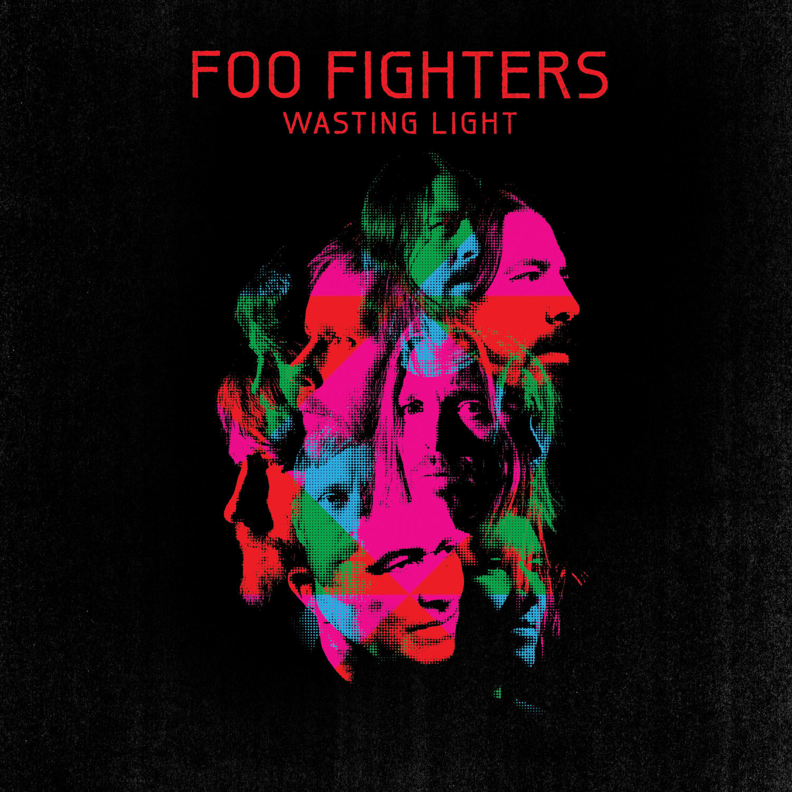

Vinyl Review

Wasting Light
Foo Fighters
As a music aficionado and a fan of the Foo Fighters, I couldn't wait to get my hands on the vinyl edition of
their seventh studio album, "Wasting Light." Released in 2011, the album saw the band returning to their
raw, garage-rock roots with a powerful and energetic sound. Produced by Butch Vig, who also produced
Nirvana's legendary album "Nevermind," "Wasting Light" is a testament to the Foo Fighters' undying passion
for creating high-octane, stadium-ready rock anthems.
The album kicks off with the thundering drums and frantic guitars of "Bridge Burning," a track that sets the
tone for what's to come. Frontman Dave Grohl's trademark raspy vocals are on full display as he belts out
the opening lines, "THESE ARE MY FAMOUS LAST WORDS!" The song's explosive energy is infectious, and it's
hard not to feel the urge to headbang along.
Another standout track on "Wasting Light" is "Rope," the album's lead single. With its catchy, staccato
guitar riff and soaring chorus, it's a song that begs to be played on repeat. The band's tight musicianship
shines through on this track, with drummer Taylor Hawkins delivering a powerhouse performance that drives
the song forward.
"Arlandria" showcases Grohl's introspective side, as he reflects on his past, present, and future. The
song's melody is both haunting and beautiful, making it one of the most memorable tracks on the album.
Additionally, the guest appearance of Hüsker Dü's Bob Mould on "Dear Rosemary" adds an extra layer of depth
to the track, and his contribution to the harmonies and guitar work makes it a standout moment on the album.
One of the most notable aspects of "Wasting Light" is its recording process. The band chose to record the
album entirely on analog tape in Grohl's garage, lending a warmth and authenticity to the sound that is
often lost in today's digital productions. The vinyl edition of the album is particularly well-suited to
showcase the depth and richness of the analog recording, making it a must-have for audiophiles and Foo
Fighters fans alike.
As a whole, "Wasting Light" is an album that proves the Foo Fighters have no intention of slowing down. With
its relentless energy and passion, the record serves as a testament to the band's enduring love for rock and
roll. From the searing guitars to the pounding drums, this album is a must-listen for fans of the genre, and
the vinyl edition only serves to enhance the experience.
Final Verdict: "Wasting Light" is a triumphant return to the Foo Fighters' roots, featuring powerful
performances and a raw, garage-rock sound that's beautifully captured on vinyl.
Did you enjoy my review of this album? Check out one of my favorite album reviews below or see a
list of my reviews!
More importantly, I'm always looking for new music to enjoy. Let
me know what you're currently listening to!
My Favorites
Read why these albums are my all-time favorites!